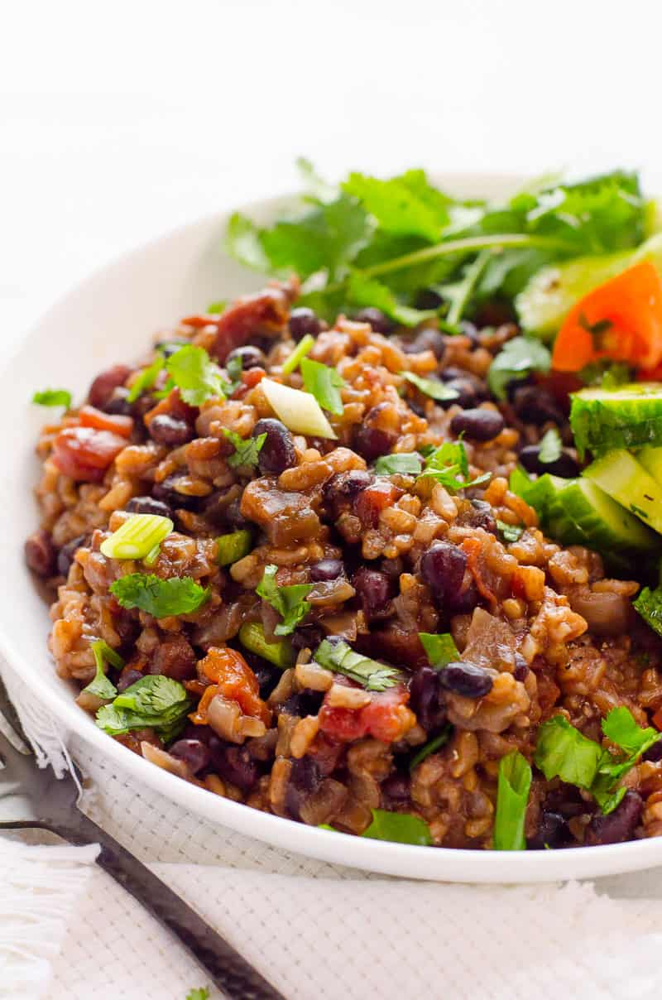

InstaPot Beans and Rice

click the link for someone's life story
Descrption
a warm and simple dish consumed by humans of the world for millenia.
Ingredients
- 1 Large Oniion
- 2 Cups Brown Rice (Rinsed)
- 1 Cup Dried Black Beans (Rinsed)
- 4 Cups Water or Broth
- 1.5 Tbs Cumin
- 1 Tbs Garlic Powder
- 2 Tsp Chili Powder
- 1.25 Tsp Salt
- 28oz Canned Diced Tomatoes
- 1 Bunch Cilantro (Finely Chopped)
- 1/2 Cup Chopped Green Onion
- Hot Sauce
Directions
- In Instant Pot, add ingredients in the following order (do not change): onion, brown rice, black beans, water, cumin, garlic powder, chili powder, salt and diced tomatoes. Do not stir.
- Close the lid, turn pressure vent to Sealing and press Pressure Cook on High or Manual button for 25 minutes – if you have 8 quart Instant Pot, 30 minutes – if you use 6 quart Instant Pot.
- After Instant Pot has finished cooking, wait 10 minutes and release remaining pressure using Quick Release method by turning valve to Venting and open the lid. If you live at altitude 2000 ft and above, use Natural Release to allow pressure subside on its own.
- Add cilantro and green onion (if using) and gently stir. If rice and beans are a bit liquidy or tiny bit crunchy, close the lid and let them sit for 10-20 more minutes.
- Serve warm with hot sauce if desired and our favourite addition – cucumber and tomato salad. We love the pairing of hearty rice and beans with cool and fresh cucumber and tomato salad or guacamole.